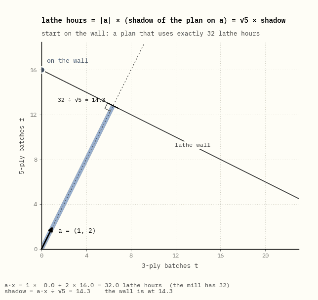
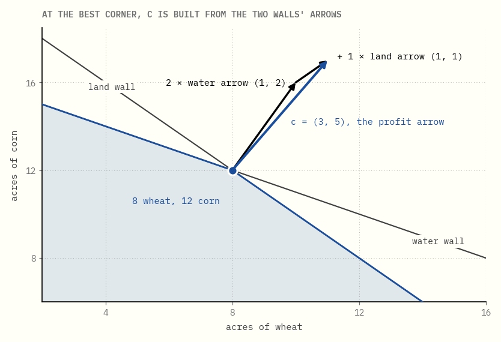

Corners, walls and prices
A farmer has 20 acres of land and 32 units of water, and has to decide how much wheat and how much corn to plant. That is a linear program. So, with thousands of rows instead of two, is an airline's crew schedule or a refinery's daily blend.
This guide follows the first eight chapters of Craig Tovey's Linear Optimization and Duality, using that one farm almost the whole way through. Every number on the page is computed in exact fractions by the code beside it, and a test fails if the prose and the code disagree.
0What this is

That walk is the simplex method, which George Dantzig devised in 1947. It starts at a corner of the shape, moves along an edge to a neighbouring corner that is worth more, and stops when no neighbour is better. Here it takes two steps: from nothing planted, to all corn, to 8 acres of wheat and 12 of corn.
Getting there takes a few ideas, and each chapter adds one:
- Chapters 1 to 5 set the problem up: what the shape is, why the answer sits on a corner, how to turn a story into a problem, and the second problem hiding behind every linear program, about what the resources are worth.
- Chapters 6 to 11 are about the shape itself: walls, corners, and what goes wrong when too many walls meet at one point.
- Chapters 12 to 17 are the simplex method: the walk, the table that does its bookkeeping, how it avoids walking in circles, and how it finds somewhere to start.
- Chapters 18 to 20 come back to prices: why they are right, how far they can be trusted, and how the big theorems fit together.
Each idea comes as a picture first and a sentence second. Where the textbook needs symbols, they appear as a small table of numbers you can check by hand. The glossary at the end gives the textbook name for every plain word used here.
1A plan inside the walls
The farm grows two crops. Each acre uses some land and some water, and earns a fixed amount:
| water | land | earns | |
|---|---|---|---|
| an acre of wheat | 1 unit | 1 acre | $3,000 |
| an acre of corn | 2 units | 1 acre | $5,000 |
| the farm has | 32 units | 20 acres |
A plan is just two numbers: acres of wheat and acres of corn. So every plan is a point on a sheet of paper, with wheat across and corn up.

Each resource draws one straight line. Below the water line are the plans that use at most 32 units of water; on the line itself the water runs out exactly. The same goes for land. Planting a negative number of acres is not allowed, so the two axes are walls as well. The shaded region is what is left: every plan the farm can actually carry out.
Take 6 acres of wheat and 14 of corn. That uses 20 acres, all the land there is, which is fine. It also needs 6 + 28 = 34 units of water, two more than the farm has. The point lies just past the water line, and that is the whole check.
Why is the water's boundary a straight line, and why is the allowed side the side towards the origin? A plan of w acres of wheat and c acres of corn uses 1 × w + 2 × c units of water. Put the water each crop needs per acre into an arrow a = (1, 2), and the plan into an arrow x = (w, c). Multiplying matching entries and adding is the dot product, written a·x.
The dot product also has a geometric meaning. If θ is the angle between the two arrows, a·x = |a| |x| cos θ, and |x| cos θ is the length of x's shadow when it is dropped at right angles onto the line through a. So a·x = |a| × (the shadow of x on a): the water a plan uses is the length of its shadow along a, times the fixed number |a| = √5.

The water runs out when a·x = 32, which is when the shadow is 32 ÷ √5 ≈ 14.3. The plans with exactly that shadow are the points of one line, at right angles to a, crossing a's line at the shadow's tip. Slide a plan along that line and its shadow does not change. Move it further in the direction of a and the shadow grows, so the plan needs more than 32 units; move it back towards the origin and it needs less. The wall a·x = 32 therefore cuts the sheet into two halves: a·x < 32 on the origin's side and a·x > 32 on the far side. The arrow a points towards the side that uses more water.
Land is the same with the arrow (1, 1), and its wall sits where the shadow is 20 ÷ √2 ≈ 14.1. More crops change only the number of entries in the arrows. With three crops, a·x = 32 is a flat plane at right angles to a; with any number of crops it is called a hyperplane, and each side of it a half-space. The region of possible plans is where all the half-spaces overlap.
The lines are straight because of two assumptions. A second acre of corn uses exactly as much water as the first, and the water used by wheat and corn simply adds up. Problems with those two properties are called linear programs. A water company that charged less per unit after the first 20 would bend the water line, and the methods in this guide would no longer apply as they stand.
In one sentence. A plan is a point, each limited resource is a straight wall, and the possible plans are the region inside all the walls.
2The best plan sits on a corner
Corn earns $5,000 an acre and wheat only $3,000. The obvious plan is to plant as much corn as possible. Corn needs 2 units of water an acre, so 32 units are gone after 16 acres. That plan earns $80,000 and leaves 4 acres of land empty.
It is not the best plan. Swap one acre of corn for two acres of wheat: the water used stays the same, the land used goes up by one, and the profit goes up by $1,000. Keep swapping until the land runs out, and the farm reaches 8 acres of wheat and 12 of corn, worth $84,000.
To see why nothing beats that, draw every plan worth some fixed amount. Those plans all lie on one straight line. Raise the amount, and the line slides across the region without turning.

The dot product explains the sweep as well. Profit is 3 × w + 5 × c, which is c·x for the profit arrow c = (3, 5). A line of equal profit is every plan with one shadow length on c, so it lies at right angles to c, and raising the profit pushes the shadow further along c. The best plan is the point of the region that reaches furthest in the direction c points.
The last point of the region the line touches is the best plan. Because the line is straight and the region's edges are straight, that last point is a corner. The region has only four:
| corner | wheat | corn | earns |
|---|---|---|---|
| nothing planted | 0 | 0 | $0 |
| all wheat | 20 | 0 | $60,000 |
| all corn | 0 | 16 | $80,000 |
| both walls at once | 8 | 12 | $84,000 |
There is also a proof that 8 wheat and 12 corn is best which needs none of the other corners. At that corner the water and the land are both used up. Take any other plan x and the move d = x − (8, 12) that gets there. The move cannot use extra water, since there is none, so (1, 2)·d ≤ 0; for the same reason (1, 1)·d ≤ 0. Now look at the arrows:

c = 2 × (1, 2) + 1 × (1, 1). So the change in profit is c·d = 2 × ((1, 2)·d) + 1 × ((1, 1)·d): two times something no bigger than zero, plus one times something no bigger than zero. It cannot be positive, so no plan earns more than $84,000. This works because both multipliers, 2 and 1, are positive: in the picture, c points between the two walls' arrows. Those two numbers come back in chapter 4, where they turn out to be what a unit of water and an acre of land are worth to this farm.
So the question "which of infinitely many plans is best?" becomes "which of four corners is best?". With thousands of crops the number of corners is far too large to check one by one, and that is what the simplex method in chapter 12 is for.
One case looks like an exception and is not. If wheat and corn both earned $1,000 an acre, the line of equal profit would lie flat against the land wall, and every plan along that edge, from 20 acres of wheat to 8 wheat and 12 corn, would tie at $20,000. The best plans would then fill a whole edge, but the two ends of that edge are still corners, so checking corners still finds the best value.
In one sentence. The best plan is the last point a sliding line of equal profit touches, and that point is always a corner.
Glossary
| here | in Tovey and other textbooks |
|---|---|
| plan | feasible solution |
| the region of possible plans | feasible region |
| wall | constraint, or the hyperplane where it holds with equality |
| line of equal profit | isoprofit line, level set of the objective |
| corner | extreme point, vertex |
| arrow a of a resource | the constraint's row, its normal vector |
| shadow on a | scalar projection, a·x ÷ |a| |
| the two halves either side of a wall | half-spaces |
| profit arrow c | objective vector, gradient of the objective |
Further reading
Craig A. Tovey, Linear Optimization and Duality: A Modern Exposition, CRC Press, 2021. Chapters 1 and 2 cover what chapters 1 and 2 here do, with more examples.
Running the code
From the repository root, make bootstrap once. Then, in this folder,
make check re-renders every figure, rebuilds the page and runs the tests.